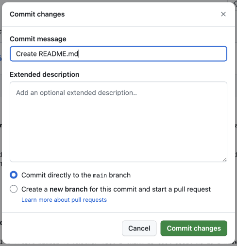

Buckle your seatbelts! Here we go into GitHub and the first repository. In this section, we will create a repository with some information about ourselves. I recommend that you don't just read the book; follow along with your own account. Practice makes improvement!
Subsection3.2.1Creating a Repository
There are a few different ways to create a new repo (remember this abbreviation? see Subsection 3.1.2).
In the top right of the page, next to the profile avatar we saw in Section 3.1, there is a plus (+) sign. Click on that and then “new repository”.
Note: GitHub differentiates bewteen a repository and a project. Don't get confused. We want repository (and you will want that for most purposes).
From the GitHub homepage 41  there is a section on the left called “Repositories”. Next to the title is a green button that says “New”. Click on that.
If you navigate to the profile avatar in the top right, and click on “Your repositories”, there will also be a green “New” button near the top.
Each of these three methods will get you to the same page. It doesn't matter which one you click.
Figure3.2.1.1.Various methods to create a new repoFigure3.2.1.2.Another method to create a new repo
Checkpoint3.2.1.3.
Let's begin the process of creating our first repo. Use one of the methods above get into the “Create a new repository” screen (Figure 3.2.1.4).
Figure3.2.1.4.The New Repository Screen
It is not difficult to create a repo. It is difficult, however, to come up with a repo name. Repository name requirements are similar to the conventions for file and folder names (Section 1.1) in that they can have no spaces and should briefly describe what the repo is for. Please take the time to think about your repo names before you create them. Renaming repositories is possible, but can cause complications in the future (such as broken links). Again, names should be short, to the point, and descriptive. The repo name for this book is “gitstarted”, the shortened title.
If you are thinking “Wait! I don't know the details of my project!” then you are not alone. The problem with this is that you have to decide what your repo is going to be about before you name it. I have definitely been victim to this and have made some rather stupid names that I should've made better. For right now, I will tell you what to name your repo. In the future, it might be best to start with a private repo and then change the name (if you need to) before you make it public. Otherwise, just be aware of the consequences should you change it at any other time.
In the “Repository name” box, type the name aboutme. Adding a description is optional and is not necessary for us right now. Next is the viewability. You may choose to make your repos private (only you and authorized collaborators can view/edit) or public (everyone can view and attempt to edit, only you and authorized collabortors can approve edits). It does not matter what you select for this; do whatever your heart desires.
The next step deals with certain files that can be automatically added to your repo. You have the choice for either or none of a README file, a .gitignore, and a license. A README file gives all the pertinent information about your repository in an easy-to-read format. It is often the first thing that people visiting your repo will read and is very important. Check this box and we will come back to the README file in just a minute. A gitignore file tells Git all of the files not to put online. Do not check this box for now; it will be very useful later on, but is not needed now. You can also choose to put a license on your code which lets users know what they can and cannot do. If you would like to explore the different licenses, please visit the GitHub documentation 42 . Since we will delete this repo later, you do not have to select this option.
You now should have entered “aboutme” into the name box, selected if you wanted the repo to be public or private, and checked the README box. Now, click the green “Create repository” button to finalize the process.
Subsection3.2.2Exploring the Code Tab
Whew, we made it! A new repo has just been created…aaaaand a lot of new buttons and options just appeared. A lot of new unfamiliar words and tabs. Please don't give up here! I will go through all of the important aspects. Many of the pieces are not applicable to beginners and some will not be applicable until we start working with Git and GitHub together. In this section, I will only be explaining the key features and will slowly add in more as we learn more about GitHub.
Figure3.2.2.1.The main new repository contents
Assuming you didn't click on anything, you should see a pretty empty page. In the top left, you should see your username and your repo name. This is common throughout GitHub so you always know where you are. Underneath that is a set of tabs that can be used to navigate through the repository-level settings and options (see Figure 3.2.2.1). You should currently be on the “Code” tab. As may be expected, this tab displays all of the files associated with the repo; it is the “home page” for every repository. You should see that a README.md file shows up. Also notice that the contents of the README are displayed under the list of files. GitHub knows how important the READMEs are to explaining code that it automatically displays the contents of the file. Right now, ours is empty (except for the default title).
To summarize, this is all you should care about for now:
The navigation at the top
The content of the “Code” tab
Noticing our README file in the list of files
Noticing the contents of the README file underneath the list of files
Subsection3.2.3Editing a File
Well, we have a README file, let's edit it! GitHub makes it rather simple to edit files. There are a two main ways to edit the README file on GitHub:
Click on the file name README.md in the list of files. Click on the pencil icon on the right of the header of the README file.
Click on the pencil icon found along the header of the README file (under the list of files).
Figure3.2.3.1.One way to edit a README fileFigure3.2.3.2.Another way to edit a README file
Checkpoint3.2.3.3.
Use one of the methods above to open the README file and get to its editing screen.
As discussed in Section 1.2, a file ending with .md is a markdown file. All README files should be markdown files and are able to understand markdown syntax. Essentially, markdown allows us to communicate basic word processing functions simply by typing certain symbols. Have you ever noticed that you can't bold or italicize text in Google? Control (Command) + B or I don't work there! They also won't work in markdown files, unfortunately. But that doesn't mean we can't bold or italicize text. I will not discuss everything on markdown here, so some basic functions are below. It will be in your best interest to become familiar with markdown and its more advanced features sooner rather than later.
Markdown Basics.
The most basic markdown tool is simple text. Just type like you normally would into the text field and the result will be normal, unformatted text. However…
To italicize a word or phrase, put one asterisk around it: *I'm italicized*
To bold a word or phrase, put two asterisks around it: **I'm bold**
To create headings, place hashtags (pound signs, if you insist) and a space before the text you wish to be in the heading: # A Title. The more hashtags you add, the deeper the heading level. Thus, ## A Subheading is a level two heading whereas ### Another Subheading is a level three heading.
To create a bulleted list, start a line with an asterisk (*) and a space. For numbered lists, start a line with a number and a period (and a space).
To put words into a code cell, place a backtick around the code: `import requests`. (The backtick is located to the left of the 1 key on American keyboards.)
Let's practice your markdown skills! Here, you will make the "aboutme" repo name true. Feel free to use the guidelines and sources above. You could also search online if you aren't sure how to do what you want to do. I have provided my (basic) example in the repo for this book 46  (titled README_aboutme.md in the book-activities folder). But be creative! There aren't any “right” answers here.
Github is pretty cool in that it will show you realtime updates of what your Markdown file will look like after you're done typing. There is a “Preview” tab right above the first line of your README file (you are currently on “Edit file”). After each task below, check the preview to verify that what you typed worked as expected.
(a)
Currently, the title of the README is the repo name. Change the title to a more human-readable one.
(b)
In the first paragraph, type your name (or your username), how many pets you have, and your favorite hobby.
(c)
In a second paragraph, type a sentence stating who your favorite music artist is. Then, make an ordered list of your favorite songs from that artist.
(d)
Create a heading level two titled “Oh Look, More Things About Me”
(e)
In a third paragraph, write two sentences with two cool facts about you. These could be made up, no one will know! After those facts, create an unordered list of your favorite musical artists after the one in the second paragraph.
(f)
Go back to the previous paragraphs and bold two words and italicize two words.
(g)
Extra Credit: Add an image, a nested list of your favorite colors and why they are your favorite, a link to your favorite YouTube video, and, if you know a coding language, some code.
Don't leave your file yet! There's one more thing left to do.

Figure3.2.3.5.The GitHub Commit Changes Dialog
Right now, we have only edited the file, but we haven't told Github that we wish to keep our edits. It's as if we edited a document, but never clicked save! But if you scroll down to the bottom of the page, you'll see that there is no “save” button. You should see a green “Commit changes” button, as in Figure 3.2.3.5. This is important. Github uses commit when indicating that you are about to officially upload your changes to your repo. This is your last change to change anything. When you think you are done, go ahead and commit your changes (commit directly to the main branch). Your changes should be represented. Navigate back to the Code tab to prepare for the next section.
Take care to notice the difference between committing and saving. Saving is easy. You can add a word, then save. Add a word, save. And so on. Think of commiting as adding a word, saving, and closing the document. Now everytime you want to add another word you have to open the entire document again, add the word, save, and close the document again. This system is put in place to help with version control. Instead of there being one version for each new word you add, there is one version for each commit. Each commit represents a stamp on the version control timeline. When coding, you save your files, but commit your changes. This will become more apparent when we work with Git and with multiple files.
It might be worth saying again just to make sure you've got it. Instead of there being one version for each new word you add, there is one version for each commit. Projects are typically broken up into tiny pieces. Each of these pieces would correspond to a commit. So if something goes wrong, you can revert back to a previous commit. We don't want commits to be for every word since it would take forever to find the commit you want to revert to. Conversely, we don't want commits to contain too many edits as that would require more work if we had to revert backwards.
An Extra Commit Example.
Let's consider one example to help understand the benefits of thinking in commits. Suppose I was working on a small video game and I was tasked with creating different worlds a character could visit. With commits in mind, I decide to break down the task into chunks: I will build one world at a time. When I am done with one world, I will commit. When I am done with another world, I will commit a second time. And so on.
This is different than creating a window in a building in the first world, then saving. Then creating two more windows and a door, then saving. Then adding some a tree and some flowers, then saving. We save much more often than we commit. But we save using our computer and commit using Git/Gitub. I would never save to Github or commit to my computer. Saving is light, commiting is heavy.
That being said, do make sure to save your files! You want to save your progress on your computer, but there is no need to commit after each time you save.
You know should feel slightly more comfortable with the Code tab and editing a file on Github. The next chapter will look at branches which help with adding new features to our code.